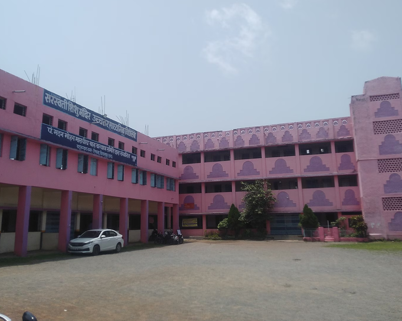
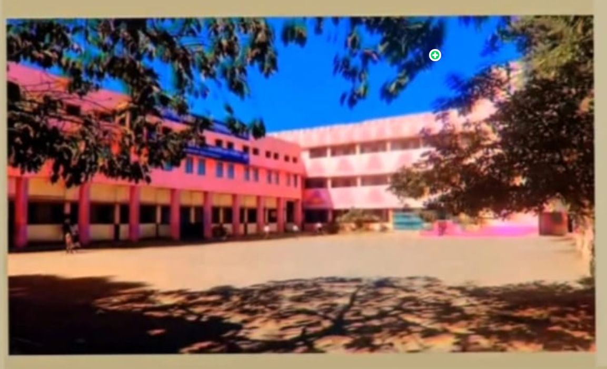
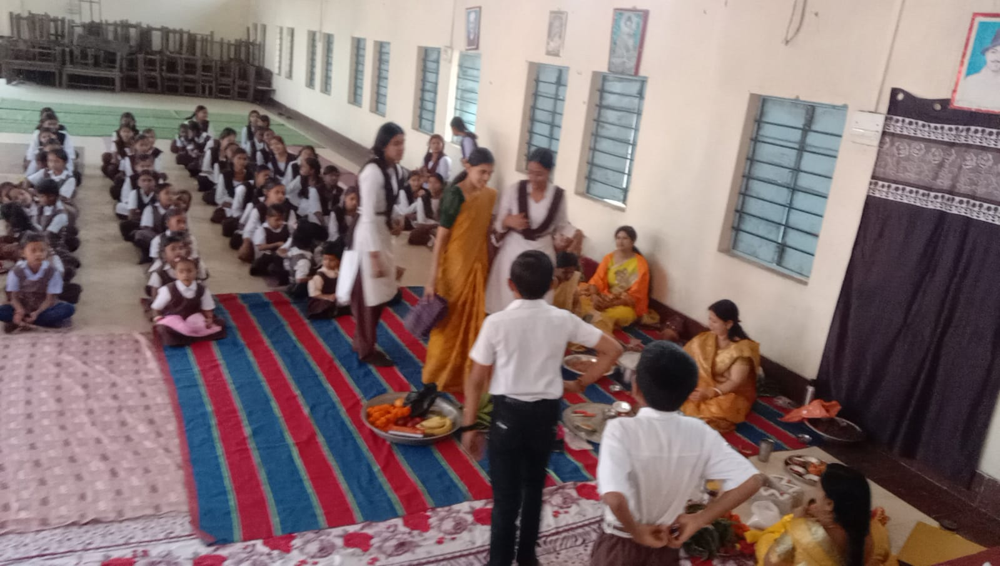
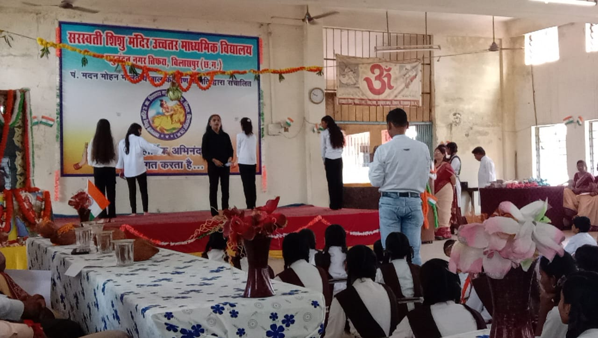
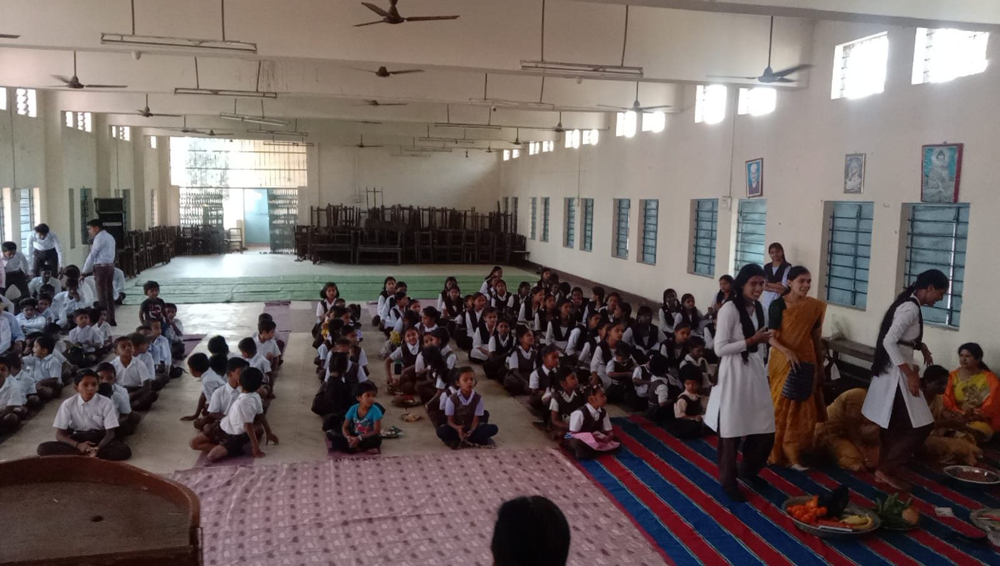

01
Mathematics
Develop analytical thinking, mathematical reasoning and quantitative problem-solving skills.
CLASS XI — XII
Saraswati Shishu Mandir is committed to academic development, discipline, values and the holistic growth of students.
Education is more than academic achievement. We believe in developing students with strong fundamentals, responsible conduct, confidence, discipline and a sense of values.
Saraswati Shishu Mandir, Yadunandan Nagar, Tifra, Bilaspur represents an educational environment where academic learning is accompanied by discipline, values and personal development.
Our educational approach places importance on conceptual understanding, guidance from experienced educators and the development of responsible students.
The broader Saraswati Shishu Mandir and Vidya Bharati educational tradition also places emphasis on cultural awareness, character building, physical development, creativity, leadership and social responsibility.
Strong fundamentals and conceptual understanding.
Encouraging responsibility, respect and good conduct.
Supporting intellectual, physical, social and cultural growth.
For Classes XI and XII, students can pursue Mathematics, Biology or Commerce.
Develop analytical thinking, mathematical reasoning and quantitative problem-solving skills.
CLASS XI — XIIExplore biological concepts and develop a strong foundation in life sciences.
CLASS XI — XIIBuild an understanding of commerce, business, finance, economics and entrepreneurship.
CLASS XI — XIIA glimpse into the environment where learning, discipline and student development come together.



Experienced educators provide academic guidance, mentorship and subject-focused learning.
Principal
Head of Chemistry & Biology
Head of Physics
Our faculty focuses on subject expertise, conceptual understanding, academic guidance and the overall development of students.
Conceptual understanding and problem solving.
Building strong scientific fundamentals.
Understanding life sciences through concepts.
Analytical thinking and quantitative skills.
Business, finance and economic understanding.
The broader educational philosophy associated with Saraswati Shishu Mandir institutions emphasizes the development of students in multiple dimensions.
Character, responsibility and respect.
Developing responsible habits and conduct.
Awareness of Indian culture and traditions.
Physical development and teamwork.
Opportunities for expression and exploration.
Confidence, teamwork and responsibility.

Interested in continuing your Class XI and XII education with Mathematics, Biology or Commerce? Get in touch with the school for admission information.
Saraswati Shishu Mandir
Yadunandan Nagar,